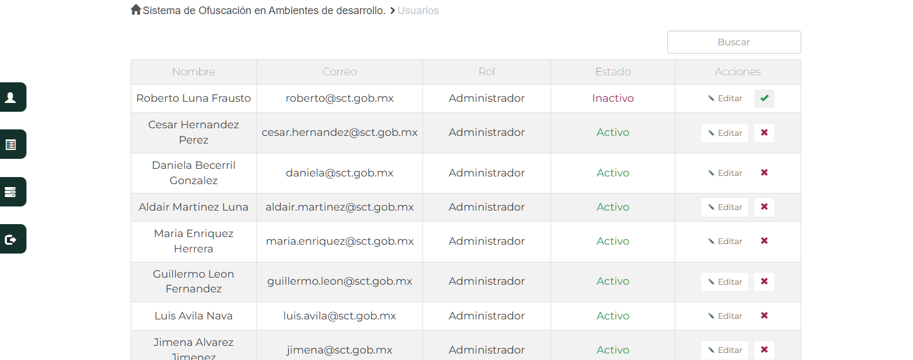
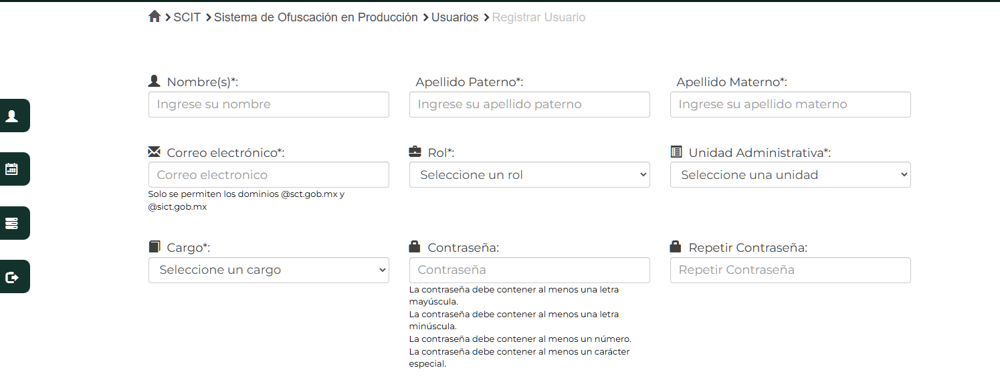
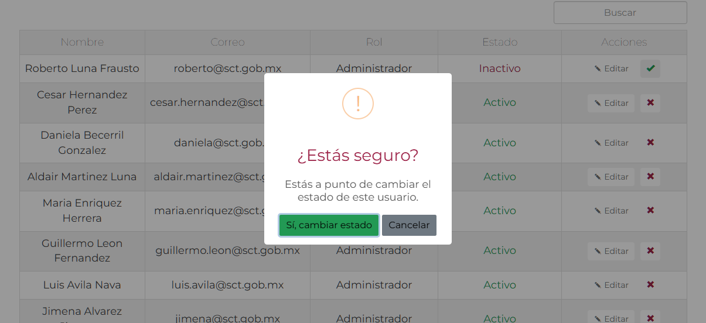
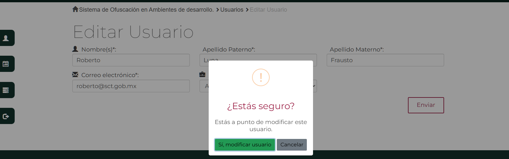
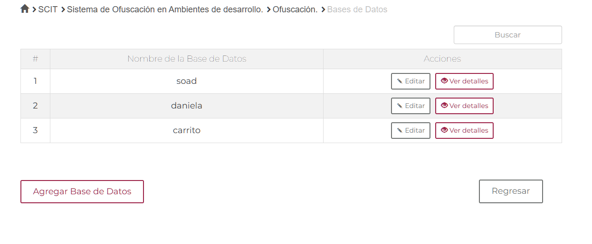
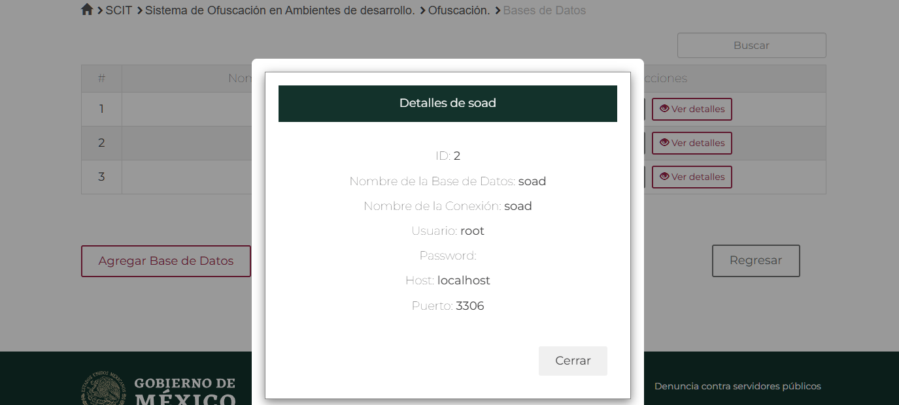
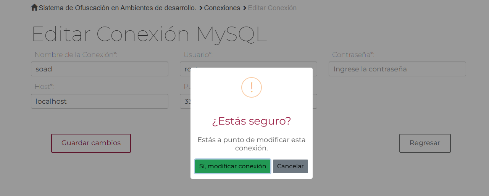
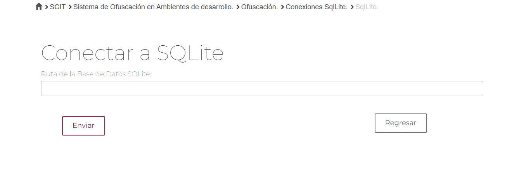
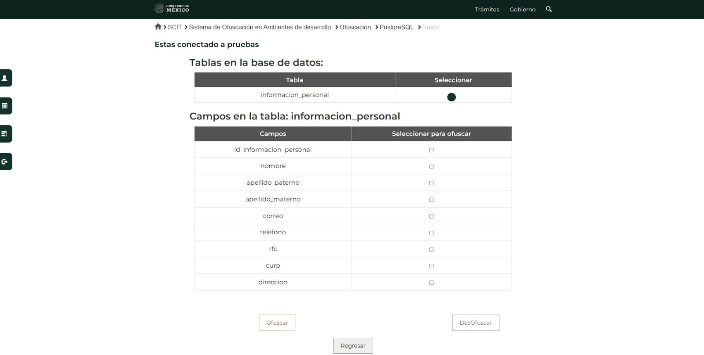

Descripción: Sistema que sirve para enmascarar datos sensibles de bases de datos en estatus de producción dentro del área UTIC (Unidad de tecnologías de la información y comunicación) de la SICT. o Desarrollo desde cero y actualización. Tecnologías: ▪ Django. ▪ Vue3 ▪ PostgreSQL ▪ Bootstrap. ▪ Para el desarrollo de estossistemas se utilizó SCRUM.